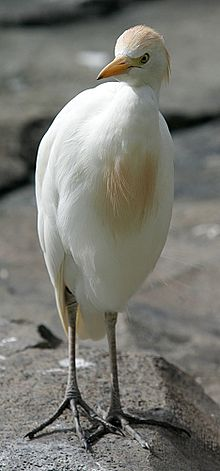
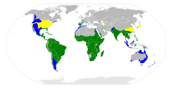

| Cattle Egret |
|  |
| Breeding adult of nominate subspecies |
| Conservation status |
|
|
| Binomial name |
Bubulcus ibis
(Linnaeus, 1758) |
| Subspecies |
|
B. i. ibis (Linnaeus, 1758)
B. i. coromandus (Boddaert, 1783)
B. i. seychellarum (Salomonsen, 1934)
|
|  |
Range map
yellow: breeding
green: year-round
blue: non-breeding |
| Synonyms |
|
Ardea ibis Linnaeus, 1758
Ardeola ibis
Bubulcus bubulcus
Buphus coromandus
Cancroma coromanda
Egretta ibis (Linnaeus, 1758)
Lepterodatis ibis (Linnaeus, 1758)
|
The Cattle Egret (Bubulcus ibis) is a cosmopolitan species of heron (family Ardeidae) found in the tropics, subtropics and warm temperate zones. It is the only member of the monotypic genus Bubulcus, although some authorities regard its two subspecies as full species, the Western Cattle Egret and the Eastern Cattle Egret. Despite the similarities in plumage to the egrets of the genus Egretta, it is more closely related to the herons of Ardea. Originally native to parts of Asia, Africa and Europe, it has undergone a rapid expansion in its distribution and successfully colonised much of the rest of the world.
It is a stocky white bird adorned with buff plumes in the breeding season which nests in colonies, usually near bodies of water and often with other wading birds. The nest is a platform of sticks in trees or shrubs. Unlike most other herons, it feeds in relatively dry grassy habitats, often accompanying cattle or other large mammals, since it catches insect and small vertebrate prey disturbed by these animals. Some populations of the Cattle Egret are migratory and others show post-breeding dispersal.
The adult Cattle Egret has few predators, but birds or mammals may raid its nests, and chicks may be lost to starvation, calcium deficiency or disturbance from other large birds. This species removes ticks and flies from cattle, but it can be a safety hazard at airfields, and has been implicated in the spread of tick-borne animal diseases.

{kind=link}
{kind=link}